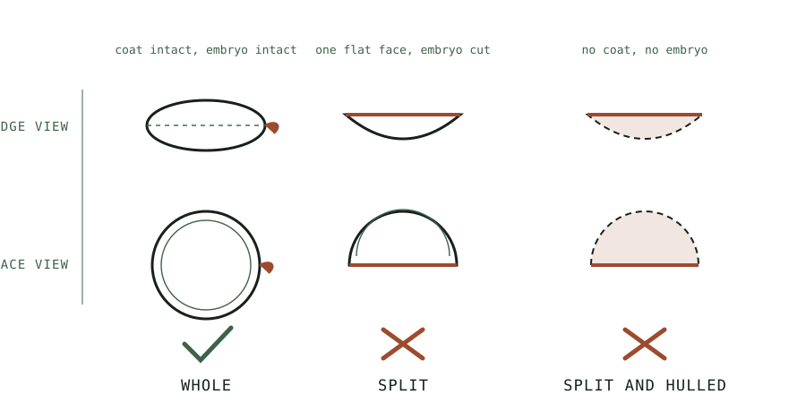

Guide
Lentils and the Red Lentil Trap
Lentils are the fastest sprout in the cupboard, and one very common variety will never sprout at all.
As an Amazon Associate this site earns from qualifying purchases. Links to products may be affiliate links. This costs you nothing extra and does not change what gets recommended. Nothing here is medical advice.
Lentils sprout faster than almost anything else worth eating. Two days from soak to harvest is normal, three days gives you a longer root and a greener flavour, and the whole cycle fits comfortably inside a working week.
They are also responsible for more abandoned first attempts than any other seed, for a single reason that has nothing to do with technique. A very large share of the lentils sold in supermarkets have been mechanically processed in a way that makes germination impossible, and nothing on the packet says so.

The red lentil trap
A whole lentil is a seed: two cotyledons, an embryo between them, and a seed coat holding the assembly together. Split it and you have destroyed the embryo. Remove the coat and you have removed the structure that protects it.
Red lentils, as sold almost everywhere, are both split and hulled. That is why they cook to a purée in fifteen minutes and why they are excellent in dal. It is also why they will sit in a jar for four days doing absolutely nothing except going sour.
The same applies to yellow split peas, split mung dal, and anything else described as split, hulled, decorticated, or polished. If a legume cooks unusually fast, that speed was bought by removing the parts a seed needs to germinate.
The frustrating part is that a bag of red lentils looks entirely healthy. There is no visible damage, no discolouration, and nothing that reads as processed. Many people conclude that they did something wrong, that their water was bad, or that sprouting simply does not work in their kitchen. The seed was dead before it left the factory.
What to buy instead
Whole brown or green lentils sprout reliably. So do the smaller speciality varieties: Puy, beluga, and Pardina all work, and several of them look striking once sprouted.
The visual test is straightforward. A whole lentil is a complete disc with a smooth rounded edge and a coat that covers it entirely. A split lentil is a half disc with one flat face, and the flat face is where the seed was cut in two. Tip a tablespoon onto a plate and look at the edges. If most of them are flat, put the bag back.
Buy seed sold for sprouting where you can, for the reasons the hub page sets out about where contamination actually originates. Whole lentils from the dry goods aisle will germinate, and the germination is not the part of this that carries risk.
Expect a small proportion of duds in any bag of whole lentils, since commercial sorting is not perfect. Five percent that never open is normal and harmless. Fifty percent means the bag is old, and the guide to buying sprouting seed in bulk covers how to test a bag before committing to it.
The soak
Lentils need less soaking than most people give them. Eight hours is ample and six is often enough, which makes them convenient in a way that chickpeas are not.
Measure a quarter cup of dry lentils for a one litre jar such as a complete jar kit with a tilting drain stand. They roughly triple in volume, which sounds modest and is enough to fill the jar comfortably by day three.
Rinse twice in cool water first, until the water runs clear rather than cloudy. Dry lentils carry a surprising amount of field dust and starch.
Cover with cool water to about three times their depth and leave at room temperature. Warm water speeds absorption and speeds several other things you would rather not accelerate.
Drain completely and discard the soak water. Some of the compounds the lentil sheds during soaking are exactly the ones that make raw legumes hard to digest, and there is no reason to keep them.
Days one to three
Day one. Rinse thoroughly, drain hard, and set the jar mouth down at a steep angle. Within twelve hours most lentils will show a white root tip pushing out from the edge of the disc. Lentils germinate visibly faster than beans and the speed is genuinely satisfying to watch.
Day two. Roots reach roughly the diameter of the lentil itself. This is the classic harvest point. The flavour is fresh and mild with a slight pepperiness, the texture is firm, and the sprout holds up well in anything.
Day three. Roots reach one to two centimetres and the flavour turns noticeably greener and more assertive. The texture softens slightly. Some people prefer this, and some find it too strong.
Beyond day three lentils begin developing the bitter edge that comes with a plant switching from stored reserves to photosynthesis. There is no benefit in going further.
Rinse twice daily. Lentils are less prone to clumping than fine seeds and less bulky than beans, which makes them among the most forgiving crops in this whole category, second only to mung.
Temperature and the two day clock
Every timing on this page assumes an ordinary room at roughly twenty degrees Celsius. Move away from that and the clock moves with it, sometimes by a full day in either direction.
Warmth accelerates germination. A kitchen at twenty six or twenty eight degrees, which is common in summer or in a room with an oven running, can bring lentils to harvest in under forty eight hours. The sprouts will be ready before you expect them, and a batch left on its original schedule will overshoot into the bitter range.
Cold slows everything. A cool room at fifteen degrees can add a full day, and a genuinely cold kitchen in winter can stall germination to the point where the batch looks like it has failed when it is only being slow. The instinct to discard a slow batch is usually wrong at low temperatures.
The important asymmetry is that heat accelerates spoilage faster than it accelerates growth. A warm batch is not simply an early batch. It is a batch with a narrower margin for error, which is why the rinse schedule tightens to three times daily above roughly twenty four degrees rather than staying at two.
Practical adjustments are simple. In summer, check the batch a full twelve hours earlier than you otherwise would, and add the third rinse. In winter, be patient rather than worried, keep rinsing on schedule, and give the batch an extra day before concluding anything.
Avoid solving a cold kitchen by moving the jar somewhere warm, such as near a radiator or on top of a fridge. Those locations are warm and also fluctuate, and unstable temperature produces uneven germination across the mass. A cool steady spot beats a warm variable one.
Flavour and use
Lentil sprouts taste distinctly of fresh peas with a pepper finish. They are more assertive than mung and much less assertive than radish or broccoli.
They are excellent raw in salads, where their firmness holds up against a dressing better than most sprouts do. They work well folded through a warm grain at the last moment, since residual heat softens them slightly without cooking them.
Cooked, they behave like a very quick cooking lentil, because that is what they are. Thirty seconds in a hot pan or ninety seconds in simmering liquid is enough. They will not hold their shape through a long braise and there is no reason to ask them to.
One practical use worth knowing: sprouted lentils blend into a smoother hummus style dip than cooked ones, and they need no cooking at all beyond a brief blanch for safety.
Drying and storage
The same rule that governs every sprout applies here and decides how long the batch lasts.
After the final rinse, drain hard, then dry the lentils properly. Twenty minutes spread on a clean towel, or a few short bursts in a salad spinner. They should feel dry rather than merely drained.
Store in a container that breathes. A jar with a loose lid, or a lidded box with a folded paper towel in the base. Sealed airtight, they trap the moisture they continue to release and turn slimy within a day.
Expect five to seven days refrigerated. Lentils keep marginally better than fine sprouts because their surface area to volume ratio is lower.
RUN THE NUMBERS
Illustrative figures based on typical retail ranges. Not your local prices, and not a promise about your results.
| Input | Per batch |
|---|---|
| Dry seed | About a quarter cup |
| Soak | 6 to 8 hours |
| Rinses | Twice daily |
| Elapsed time | 2 to 3 days |
| Finished yield | Roughly 3 cups |
| Refrigerated life | 5 to 7 days after drying |
Whole lentils are among the cheapest sprouting inputs available, and the two day cycle means a single bag turns over quickly enough that viability is rarely an issue. For anyone testing whether they will actually keep this habit, lentils are the lowest cost experiment on the site.
WHAT GOES WRONG
Nothing germinates at all. Split or hulled seed. Check the edges on a plate. This accounts for the overwhelming majority of failed lentil batches.
Patchy germination with many duds. Old stock. Run a germination test on twenty seeds before committing a full batch from an unfamiliar bag.
Sour smell by day two. Drainage, as always. The jar is sitting too flat. Lentils are less forgiving than they look here because they pack more densely than beans.
Bitter flavour. Harvested past day three. Pull them earlier.
Slimy texture after refrigerating. Stored wet, or stored sealed. Dry properly and use a container that breathes.
DO THIS NOW
- Tip a tablespoon of your lentils onto a plate and look at the edges. Flat faces mean split seed and no amount of technique will fix it.
- Buy whole brown or green lentils if what you have turns out to be red.
- Measure a quarter cup, rinse twice, and soak for six hours this evening.
- Set two rinse alarms and plan to harvest on day two rather than day three for your first batch.
Next
If this is your first sprouting project of any kind, mung beans start to finish is the more forgiving starting point and teaches you what a healthy jar smells like.
If the dud rate in your bag was high, the problem is upstream. Buying sprouting seed in bulk covers viability decay, the germination test, and what to ask a supplier before spending on a large quantity.